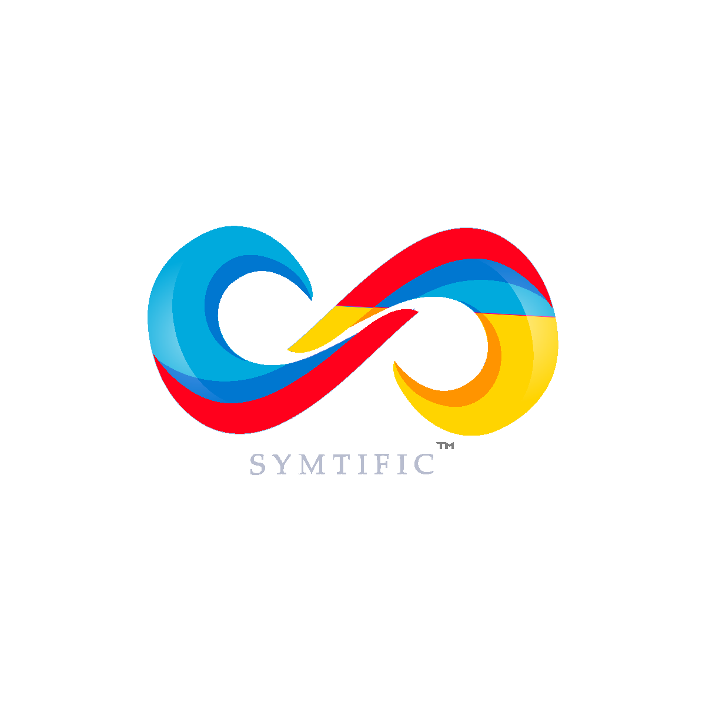

|  |
Symtific is a text editor for Mathematics, Physics, and Electrotechnics that lets you implement mathematical functions for these subjects. It is designed to be intuitive, responsive and fun. You can also play the snake game when you want to relax! opcionale It's a University project so it is still being developed and expect minor glitches, and less functions, but we hope to implement them in the future. Wait and see :slight_smile: |